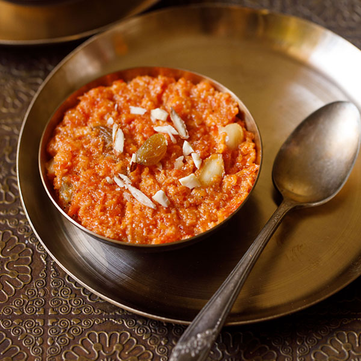

Carrot Halwa

Ingredients
- 4 cups grated carrots
- 2 cups milk
- 1 cup white sugar
- 1 tablespoon butter
- ½ cup cashew halves
- ½ cup raisins
- ½ cup raisins
Steps
- In a saucepan over medium heat, combine carrots and milk. Bring to a boil, and cook until most of the milk evaporates, about 10 minutes. Stir in sugar, and simmer until mixture becomes dry. Stir constantly to ensure that it doesn't burn. Remove from heat.
- Melt butter in a skillet over medium heat. Stir in cashews and raisins, and saute until cashews are golden brown. Spread over carrot mixture. Sprinkle top with ground cardamom for fragrance.
return